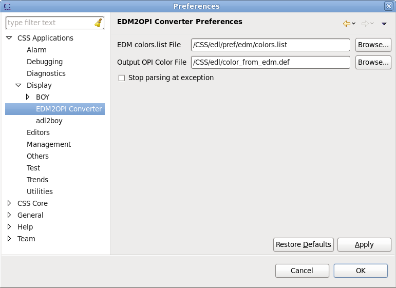
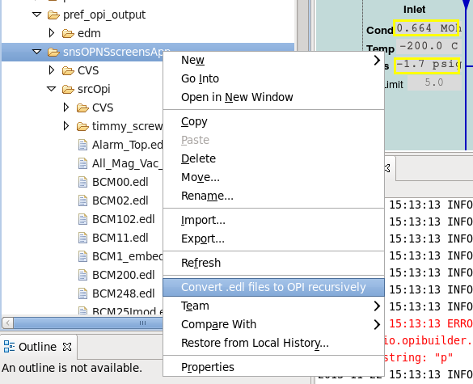

{kind=link}

EDM2OPI converter can convert EDM edl files to BOY OPI files automatically. It may be able to convert 95% features of EDM, but still have 5% differences which may needs manual adjustment. In below example, left side is the edl file and right side is the converted opi file.
To convert edl files to OPI files, all the edl files and the EDM colors.list must be accessible in the CSS Workspace, i.e. visible in the CSS Navigator. This can be accomplished by copying them into the workspace, or by creating a linked folder in the CSS Workspace that points to the directory which contains the EDM files. To create a linked folder in the Navigator, use use the menu File/New/Other.../General/Folder, then the "Advanced" tab to create a folder that links to a directory outside of the Workspace.
Before edl files can be converted to OPI, some preferences must be set in EDM2OPI preference page. The preference page can be opened via menu Edit->Preferences...->CSS Applications->Display->EDM2OPI Converter

You can convert a whole directory by right clicking the folder and select Convert .edl files to OPI directly.
The folder may contains edl files, sub-folder or other resource files such as images. The sub-folders will be converted
recursively and the resource files will be copied to the destination folder in the same structure.
The destination folder will be in the same directory of the top folder and with _opi_output appended to the
source folder name. The original directory structure is preserved so the relative paths will work for opi files.

Right clicking one or multiple edl files in CSS navigator and choose Convert to OPI file will convert all the selected edl files to OPI files. The output opi files are in the same directory of the edl files. If there was already a same name opi file, it will be replaced silently.
Below is the conversion map between EDM widgets and BOY widgets.
| EDM Widgets | BOY Widgets | Comment |
|---|---|---|
| Lines | Polyline/Polygon | |
| Rectangle | Rectangle | |
| Circle | Ellipse | |
| Arc | Arc | |
| Static Text | Label | |
| Text W. Reg. Exp. | Label | |
| Gif Image | Image | |
| Png Image | Image | |
| Embedded Window | Linking Container | |
| Dynamic Symbol | Linking Container | Gate Up/Down are ignored. |
| Meter | Meter | |
| Bar | Progress Bar | |
| Indicator | Progress Bar | |
| Message Box | N/A | |
| Byte | Byte Monitor | |
| X-Y Graph | XY Graph | BOY doesn't support "plot" mode. BOY cannot automatically increase buffer size if the PV is a big waveform. |
| Table | N/A | |
| Coef Table | N/A | |
| PV Inspector | N/A | |
| Symbol | Linking Container | |
| Animated Symbol | N/A | |
| Text Monitor | Text Update | |
| Text Update | Text Update | |
| Reg Text Update | Text Update | Regular expression is ignored. |
| Hoff Video | Intensity Graph | |
| Slider | Scaled Slider | |
| Motif Slider | Scaled Slider | |
| Text Control | Text Input | |
| Button | Boolean Button | |
| Menu Button | Menu Button | |
| Up/Down Button | Spinner | |
| Message Button | Boolean Button | |
| Choice Button | Choice Button | |
| Radio Box | Radio Box | |
| Menu Mux | N/A | |
| Ramp Button | N/A | |
| Exit Button | Action Button | Only exit current OPI |
| Related Display | Action Button/Rectangle/Menu Button | In BOY, if the button is covered by other widgets, it may not clickable. |
| Shell Command | Action Button or Menu Button | Password, Initial Exec Delay and Auto Exec Interval are ignored. The button is always visible in BOY because invisible button in BOY is not clickable. |
| Text Entry | Text Input |
There are some sample edl files for test purpose. You can save them to your workspace to test if they can be converted to opi files.